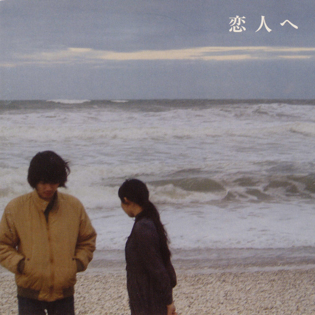

Astro
Content-first framework for fast static sites.
Pulling profile from Lanyard.
Since calculating...
Last Train At 25 O'clockLampCybersecurity student, independent developer, designer, and collector based in Pennsylvania.
I like understanding what happens behind the interface, then making the interface worth looking at.
I’m studying cybersecurity alongside business administration. I graduated high school in 2024 and spent time working part-time as a mechanic before shifting more seriously into tech.
My interest started around 14–16, close to the Counter Blox and CS:GO cheating scene. That world made me curious about security, systems, and how software behaves beneath the surface.
Useful tools, shared digital spaces, and earlier experiments from the archive.
A changing kit of languages, frameworks, creative tools, and deployment platforms.
Content-first framework for fast static sites.

Typed JavaScript for larger projects.

Component-driven interfaces and app views.

Structure, layout, systems, and polish.

The language I keep coming back to.

Fast development and modern builds.

Deployments, previews, and functions.

DNS, domains, security, and edge services.

Writing, debugging, and daily project work.

Timeline editing, audio, color, and export.

Motion graphics, compositing, and animation.

Interface layouts, prototypes, and systems.

Repositories, issues, and releases.
Editing, testing, and iterating on projects.
Add something to the public wall or send a private note only I can see.
Site feels clean. retrial era looking real.
Leaving this here before the wall fills up.